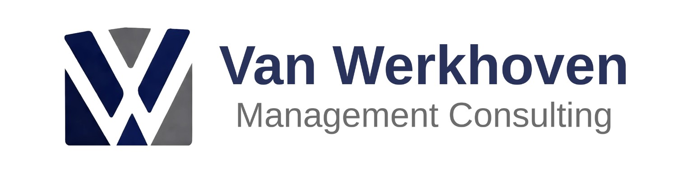

Procesverbetering
Procesanalyse, Lean-verbetering en implementatie. Efficiënter werken en beter overzicht.

VAN WERKHOVEN MANAGEMENT CONSULTING
Praktische verbeteringen die tijd besparen, fouten verminderen en overzicht creëren. Van procesanalyse tot de uitvoering van veranderopgaven.
Laten we kennismaken ↗Procesanalyse, Lean-verbetering en implementatie. Efficiënter werken en beter overzicht.
Slimme Excel-oplossingen, dashboards en digitalisering van terugkerend werk.
Van data en vraagstukken naar stuurinformatie en besluitvorming. Praktisch en doelgericht.
Planning, risico’s, stakeholders en resultaatgericht uitvoeren. Van plan naar realisatie.
Samenhang en regie over meerdere veranderinitiatieven.
Ik denk graag met je mee, vrijblijvend en praktisch.